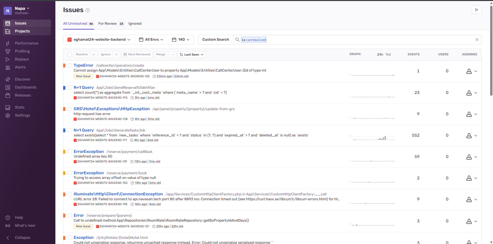
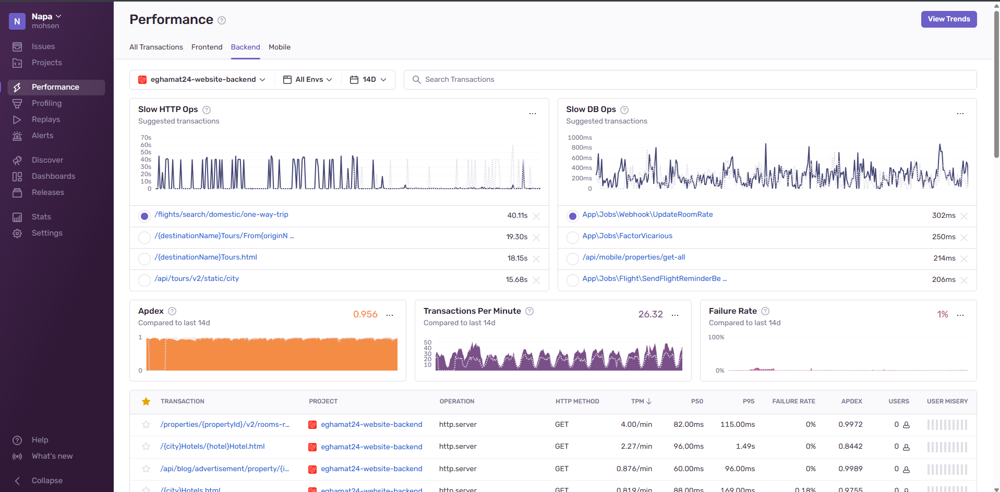
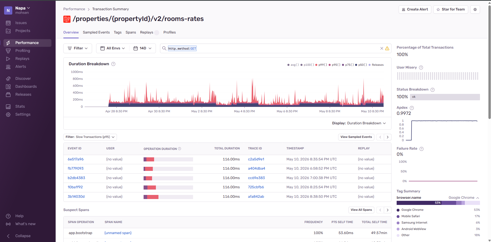

Sentry یک پلتفرم پایش خطا و عملکرد (Error & Performance Monitoring) است
که به صورت لحظهای (Real-time) به تیم فنی شما اطلاع میدهد:
چه خطایی، در کجای کد، برای چه کاربری، چند بار، و دقیقاً تحت چه شرایطی اتفاق افتاده است.
تصور کنید مشتری شما در حال پرداخت آنلاین رزرو هتل است و ناگهان صفحه ارور میدهد.
مشتری فقط میبیند که «چیزی کار نکرد» و سایت را میبندد. شما هیچوقت نمیفهمید
که این اتفاق افتاد، تا اینکه مشتری شکایت کند یا — بدتر از آن — به سراغ رقیب برود.
Sentry دقیقاً همان لحظهای که این خطا رخ میدهد، با جزئیات کامل به تیم شما گزارش میدهد.
۰۱ · کاهش ریزش مشتری
خطاها قبل از شکایت پیدا میشوند
آمارها نشان میدهد فقط ۱ نفر از هر ۲۶ مشتری ناراضی شکایت میکند. ۲۵ نفر دیگر فقط میروند.
Sentry به شما اجازه میدهد خطا را قبل از اینکه به اعتبار برندتان آسیب بزند، رفع کنید.
۰۲ · جلوگیری از کاهش درآمد
یافتن باگهای مسیر پرداخت
اگر در فرآیند callBack درگاه پرداخت خطایی رخ بدهد، یعنی پول مشتری کم شده اما رزرو ثبت نشده.
این یعنی استرداد، پشتیبانی پرهزینه و از دست رفتن اعتماد.
۰۳ · افزایش سرعت سایت
شناسایی کوئریهای کند
هر ۱ ثانیه تأخیر در بارگذاری صفحه به طور میانگین ۷٪ نرخ تبدیل را کاهش میدهد.
Sentry دقیقاً نشان میدهد کدام صفحهها کند هستند و چرا.
۰۴ · شفافیت برای مدیر
داشبورد سلامت محصول
بدون نیاز به دانش فنی میتوانید روند کلی سلامت سایت را ببینید: تعداد خطاها در حال کم شدن
است؟ کدام بخش بیشترین مشکل را دارد؟ تیم فنی روی چه چیزی کار میکند؟
قابلیتهای اصلی Sentry
قابلیت
ارزش برای کسبوکار
Error Tracking
ثبت تمام خطاهای backend و frontend با Stack Trace کامل
Performance Monitoring
اندازهگیری زمان پاسخ هر API و صفحه (P50, P95, P99)
Release Tracking
تشخیص اینکه آیا آخرین بهروزرسانی، خطای جدیدی ایجاد کرده است یا نه
Alerts
ارسال خودکار هشدار به تیم در ایمیل، Slack یا تلگرام هنگام بروز خطای جدی
User Context
نمایش اطلاعات کاربر (مرورگر، شهر، شماره مشتری) که خطا برایش رخ داده
۰۲ تصویر اول: صفحه Issues (مدیریت خطاها)
این صفحه قلب Sentry است. تمام خطاهایی که در ۱۴ روز گذشته در سایت
رخ داده، اینجا فهرست شدهاند.
در حال حاضر ۸۶ خطا روی این پروژه ثبت است.

تصویر ۱. لیست خطاهای پروژه
قابلیتهای Sentry که در این صفحه استفاده شدهاند
گروهبندی هوشمند
Issue Grouping
Sentry خطاهای مشابه را بهجای نمایش جداگانه، یک «Issue» در نظر میگیرد و فقط میگوید
چند بار تکرار شده. (مثلاً ۵۵۲ رخداد در یک خط.)
دستهبندی وضعیت
Unresolved / For Review / Ignored
تیم میتواند خطاها را بهسرعت اولویتبندی کند: کدام نیاز به بررسی فوری دارد،
کدام رفع شده، کدام بیاهمیت است.
برچسب «New Issue»
تشخیص خطاهای جدید
خطاهایی که برای اولین بار اتفاق افتادهاند با برچسب زرد مشخص میشوند —
معمولاً نشانهای از یک رلیز معیوب یا تغییر تازه.
First Seen / Last Seen
زمانبندی رخداد
هر خطا تاریخ اولین و آخرین رخداد دارد (مثل 53min ago | 53min old).
این کمک میکند تشخیص دهیم مشکل تازه است یا قدیمی.
نمودار 24h/14d
Event Frequency Graph
نمودار کوچک کنار هر خطا روند تکرار را نشان میدهد — آیا خطا در حال افزایش است
یا تکرخداد بوده.
Events & Users
شمارش رخداد و کاربران درگیر
تعداد دفعات رخداد + تعداد کاربران متأثر. این به اولویتبندی کمک میکند:
خطایی که ۵۰۰ بار رخ داده و ۳۰۰ کاربر را تحت تأثیر قرار داده، فوریتر از خطایی
است که ۵۰۰ بار برای یک کاربر تکرار شده.
تأثیر مستقیم بر کسبوکار
بدون Sentry، آن ۵۹ خطای callBack پرداخت احتمالاً تا روزها یا هفتهها
ناشناخته باقی میماند و هر کدام میتوانست به معنی یک رزرو از دست رفته باشد.
با میانگین ارزش رزرو هتل، حتی نجات ۱۰٪ از این تراکنشها میتواند هزینه سالانه
Sentry را چندین برابر جبران کند.
۰۳ تصویر دوم: صفحه Performance (پایش عملکرد)
این صفحه به سؤال مهم پاسخ میدهد: «سایت ما چقدر سریع است؟»
Sentry نهفقط خطاها، بلکه کندی را هم پایش میکند —
چون کندی یعنی مشتری از دست رفته، حتی وقتی هیچ ارور قرمزی هم نمایش داده نشود.

تصویر ۲. داشبورد Performance · بخش Backend
0.956Apdex (رضایت کاربر)
26.32تراکنش در دقیقه
1%نرخ شکست
قابلیتهای Sentry که در این صفحه استفاده شدهاند
Performance Monitoring
پایش عملکرد APMای
نقشه کامل کارایی همه endpointها، Jobها و کوئریها — مثل ابزارهای APM گرانقیمتی
مانند New Relic، اما درون همان Sentry.
Slow Ops Detector
شناسایی خودکار تراکنشهای کند
Sentry بهصورت خودکار تراکنشهای کند HTTP و DB را پیدا و پیشنهاد میدهد.
نیازی نیست تیم خودش بگردد دنبال نقاط ضعف.
Apdex Score
شاخص رضایت از سرعت
یک عدد ساده بین ۰ تا ۱ که میتوانید در گزارشهای مدیریتی بهعنوان KPI سلامت محصول
استفاده کنید.
P50 / P95 / P99
صدکهای زمان پاسخ
چرا میانگین گمراهکننده است: ممکن است میانگین ۱۰۰ms باشد، اما ۵٪ کاربران
۳ ثانیه صبر کنند. صدکها این تجربه واقعی را نشان میدهند.
Failure Rate
نرخ شکست در زمان
درصد درخواستهایی که با خطا تمام میشوند. اگر این عدد ناگهان جهش کند،
تیم باید فوراً بفهمد.
Environment Filter
جداسازی Frontend / Backend / Mobile
میتوان عملکرد هر لایه را جداگانه بررسی کرد و فهمید مشکل از سمت سرور است
یا مرورگر کاربر.
TPM Counter
Transactions Per Minute
نمایش بار واقعی هر endpoint. به برنامهریزی منابع سرور و مقیاسپذیری
کمک شایانی میکند.
تأثیر مستقیم بر کسبوکار
۴۰ ثانیه تأخیر در جستجوی پرواز یعنی نزدیک به ۱۰۰٪ ریزش کاربر در آن مرحله.
Sentry کمک میکند تیم فنی بداند دقیقاً کجا را باید بهینه کند، نه اینکه ماهها
روی بهینهسازی صفحاتی کار کند که اصلاً مشکل نداشتهاند.
۰۴ تصویر سوم: جزئیات یک تراکنش (Transaction Summary)
وقتی روی یک مسیر خاص — اینجا /properties/{propertyId}/v2/rooms-rates — کلیک میکنیم،
Sentry یک پروفایل کامل از رفتار آن endpoint در ۱۴ روز گذشته نشان میدهد.
این صفحه ابزار اصلی تیم فنی برای دیباگ عمیق است.

تصویر ۳. Transaction Summary برای endpoint نرخ اتاقهای هتل
قابلیتهای Sentry که در این صفحه استفاده شدهاند
Transaction Drill-down
تحلیل عمیق یک endpoint
از کل به جزء: میتوانید روی هر مسیر کلیک کنید و تمام رفتار آن را در زمان ببینید،
نه فقط یک آمار خلاصه.
Trace ID
ردیابی end-to-end
هر تراکنش یک Trace ID دارد. اگر یک درخواست از frontend شروع و در backend ادامه یابد،
تمام مسیر را میتوان پیگیری کرد.
Sampled Events
نمونههای واقعی برای دیباگ
Sentry نمونهای از تراکنشهای کند را با تمام دادههای زمینهای ذخیره میکند.
توسعهدهنده دقیقاً میبیند چه چیزی رخ داده.
Suspect Spans
شناسایی Bottleneckها
هر تراکنش از چند Span (مرحله) تشکیل شده. Sentry میگوید کدام مرحله بیشترین زمان
را میگیرد — مثلاً bootstrap اپلیکیشن یا یک کوئری خاص.
Tag Summary
دستهبندی بر اساس مرورگر، شهر، نسخه
آیا فقط کاربران Safari کند میبینند؟ آیا مشکل خاص یک نسخه از موبایل است؟
Tagها این پاسخها را میدهند.
Star for Team
پین کردن تراکنشهای مهم
تراکنشهای حیاتی کسبوکار (مثل پرداخت، رزرو) را میتوان پین کرد تا همیشه
در داشبورد تیم دیده شوند.
تأثیر مستقیم بر کسبوکار
مسیر «نرخ اتاق هتل» مستقیماً به فرآیند رزرو و درآمد متصل است. اگر این endpoint
یک شب کند یا خراب شود، شب بعد کسبوکار ضرر مالی قابل توجهی خواهد دید. Sentry
با Star و Alert این مسیر، تضمین میکند چنین اتفاقی هرگز بدون اطلاع تیم رخ ندهد.
۰۵ جمعبندی · چرا Sentry برای کسبوکار شما ضروری است
با مرور سه تصویر بالا، Sentry را میتوان به سه شکل خلاصه کرد که هر سه برای
یک صاحب کسبوکار قابل لمس هستند: